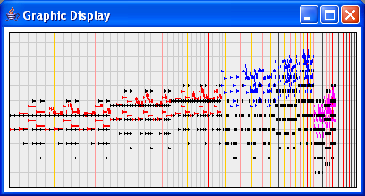

The graphic displayer allows to view musical objects in a piano-roll like representation. The horizontal axis uses a non-linear (arctangent) time scale to represent the whole objects in a limited space. The vertical axis represents the pitch. Vertical lines represent time points: seconds, 5 seconds (first yellow line), 10 seconds (first red line), 1 minute (first black line).